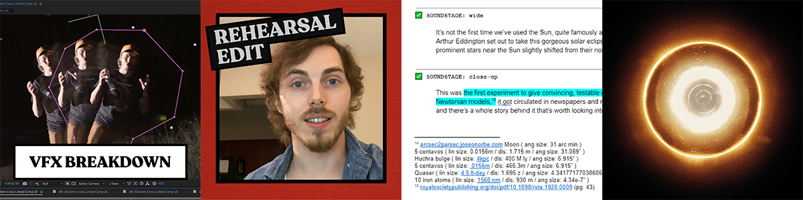

What Is This Cosmic Mirage?
The questions that arise from seeing an Einstein cross point to very revealing mechanics that underlie the large scale interactions of the universe. A simple question, "What is this?" leads to a wealth of knowledge.
CORRECTIONS
- "Geodesic" and "spectroscopy" both have more commonly accepted pronunciations than was used in the video. You can hear examples of both in their respectively linked dictionary entries. Spectroscopy - dictionary.com/browse/spectroscopy
spek-tros-kuh-pee, spek-truh-skoh-peeInfo Sources
1 "I was scanning through Wikipedia, where I got distracted by this photo."
the photo that piqued my interest 2012, ESA/Hubble & NASA
en.wikipedia.org/wiki/Quasar#/media/File:UZC_J224030.2+032131.jpg 2 "In this case, a spectroscopic analysis reasonably confirms that the redshifted images that we're looking at are a quasar."
2237+0305: a new and unusual gravitational lens 1985, Huchra et al.
Astronomical Journal, Vol. 90
p. 691-696ui.adsabs.harvard.edu/abs/1985AJ.....90..691H/abstract 3 "I mean, [Albert Einstein] did have a few things to say about Jesus, but—"
einstein's quote regarding the abuse of religion for personal gain Wikipedia
accessed 2020
§ Jewish identityen.wikipedia.org/wiki/Religious_and_philosophical_views_of_Albert_Einstein#Jewish_identity 4 A "The path of light being influenced by the gravity of massive objects was theorized, in part, as early as the late 1700s. Back then it was in the context of early ideas of black holes, which were then called 'dark stars.'"
B "As late as 1936, Einstein is quoted as saying, 'Of course, there is no hope in observing this phenomenon directly.'"
the legacy of Einstein's eclipse, gravitational lensing 2004, Cervantes-Cota et al.
A: §1. Introduction, p. 2, ¶ 2
B: § 9. Czech Mates, p. 14, ¶ 3arxiv.org/abs/1912.07674 5 "Quasars are supermassive black holes that ... heat up so much that, in the more extreme cases, can radiate the same amount of light as a thousand galaxies."
Hubble’s observations of bright quasar 3C 273 2013, NASA
accessed 2022
¶ 3nasa.gov/content/goddard/nasas-hubble-gets-the-best-image-of-bright-quasar-3c-273/#.WoSaPOdG2Uk 6 A "Gravitational lensing ... tends to both brighten and magnify distant objects."
B "There are centers to galaxy clusters, but they're never axially-symmetric, they have lumpy mass distributions, and they're home to complex, invisible dark matter structures."
C "In every multiply-imaged gravitational lens, you're expected to see a total odd number of images."
Gravitational Lensing Review 2010, Bartelmann M.
A: § 6.4 Cosmic magnification
B: § 5. Galaxy clusters
C: p. 14, ¶ 1arxiv.org/abs/1010.3829 7, 8 "We can see [time delay] when the lensed object has intermittent brightness. So if it’s flickering in some sort of way, that interval will show up at different times, and the images from each path can be delayed anywhere from hours to years."
observational determination of the time delays in gravitational lens system Q2237+030 2005, Vakulik et al.
arxiv.org/abs/astro-ph/0509545 multiple images of a highly magnified supernova formed by an early-type cluster galaxy lens 2014, Kelly et al.
arxiv.org/abs/1411.6009 9 "Gravitationally lensed time delay 'has been utilized as another method for scientists to get increasingly accurate observations of the cosmological constant.'"
the mass distribution of the cluster 0957+561 from gravitational lensing 1996, Fischer et al.
arxiv.org/abs/astro-ph/9608117 10 "This expedition was so important" ... "because it was the first experiment to give testable, reliable, convincing data that favored Einstein's theory of general relativity over the Newtonian models."
the deflection of light by the sun's gravitational field, from observations made at the total eclipse of May 29, 1919 1919, Dyson F., Eddington A., Davidson C.
The Royal Society
p. 43, ¶ 1 & fig 2royalsocietypublishing.org/doi/pdf/10.1098/rsta.1920.0009 11, 12 "There's a team in the planning phase for this project where they send probes out far enough from our Sun that it can spin around, take a photo of the Sun, and we can observe our own local Einstein rings, which we can then reconstruct into images of stars or planets and we would effectively turn our sun into a solar system-sized telescope."
The Solar Gravitational Lens will Map Exoplanets. Seriously. 2020, Launch Pad Astronomy
youtu.be/NQFqDKRAROI Direct Multipixel Imaging and Spectroscopy of an Exoplanet with a Solar Gravity Lens Mission 2020, Turyshev et al.
arxiv.org/abs/2002.11871 13 "The talks were advertised as the Scale of the Universe!"
the great debate: program agenda 1920, National Academy of Sciences
accessed 2020
web.archive.org/web/20200808200748/http://www.nasonline.org/about-nas/history/archives/milestones-in-NAS-history/the-great-debate-of-1920.html 14 "Curtis wanted a real spirited debate, he wanted to get people really riled up. He was a lively guy, a great speaker, and he intuitively understood that the friction between the two competing visions of the universe would just make for an exciting show for the audience."
the great debate: what really happened 1976, Hoskin M.
J. Hist. Astron., 7, 169-182 / NASA
accessed 2020
apod.nasa.gov/debate/1920/cs_real.html 15 "He thought that the Milky Way was way smaller than we believe it to be, and he had a bit of an anthropocentric belief that we're located in the center of the Milky Way kind of near the galactic core."
NRC transcripts of the great debate 1921, Shapley H., Curtis H.
National Research Council Vol. 2, Part 3, Number 11, pp 171-194 / NASA
accessed 2022
§ PART II: DIMENSIONS AND STRUCTURE OF THE GALAXYapod.nasa.gov/htmltest/gifcity/cs_nrc.html 16, 17, 18 "Current estimates suggest a thickness of ~900 light-years and a stellar disk diameter of up to 200,000 light-years (or as large as 1,900,00 light-years including the dark halo)."
disk stars in the Milky Way detected beyond 25 kpc from its center 2018, López-Corredoira et al.
A&A Volume 612, April 2018
aanda.org/articles/aa/abs/2018/04/aa32880-18/aa32880-18.html the edge of the galaxy 2020, Deason et al.
arxiv.org/abs/2002.09497 the Milky Way's stellar disk 2013, Rix H., Bovy J.
arxiv.org/abs/1301.3168 19 "In many ways, they were operating in the dark. Both figuratively and literally, thanks to a lack of light pollution."
Urban Lighting, Light Pollution and Society 2014, Pottharst et al.
Taylor & Francis
p. 1google.com/books/edition/Urban_Lighting_Light_Pollution_and_Socie/V7wbBQAAQBAJ Music
available on all major platforms
Credits
Brandt Hughes research, writing, host, camera operator, audio engineer, music producer, editor Jason Murphy additional audio engineering Bryce Castillo additional audio engineering, additional camera operating Michael Merrifield twitter advice Transcript
The vastness of the cosmos is home to unexpected outcomes, unseen observers, and improbable anomalies.
Despite knowing that, despite embodying its very truth, maybe even for that reason, I can't help but be inescapably paired to any sort of phenomenon that's as rare as I am.
And I found just such a thing.
This is an Einstein Cross.
I was scanning through Wikipedia, where I got distracted by this photo.
It was simply described as "a cosmic mirage," where these four surrounding spots were all actually the same object.
Hmm, curious.
To me, one of the beautiful truisms of science is that any sort of surprising result, clearly exposes an incomplete understanding of the mechanics that led to that outcome.
So, if I find something like this that I don't particularly understand very well, I'm going to start speculating.
So my first thought is, if I'm looking through a telescope and I happen to observe four identical objects in the sky that maybe are the same thing, I'm thinking, "You know what?
I [garbled] up.
"Maybe there's a scratch in the optics or something giving me a little bit of a "blurred double vision, "because let's just be honest, that's a more plausible explanation." But we probably wouldn't even be talking about this if it just amounted to user error or bad glass, so I think we can safely rule those explanations out.
I can see other galaxies just fine and other astronomers, they can see the same anomaly as I do.
So we should probably get around to actually confirming that these four different objects are from the same source.
Otherwise, this video would kind of just be, "I saw four different things in the sky," and...
you could probably do that right now.
And we can try to confirm that these are duplicates with this really clever technique called spectroscopy, where they measure the spectrum of light coming from a source.
It's important to remember that every celestial body we can see is detected by a combination of emitting light, reflecting light, and absorbing light.
The resulting spectrum of light can help identify cosmic bodies and establish a variety of properties of those materials whether they be stars, planets, nebulae, galaxies, and whatever else might be out there.
We can also use these readouts to establish its redshift, which is when the frequency of light gets elongated.
This is used in cosmology to determine an object's distance and movement.
In this case, a spectroscopic analysis reasonably confirms that the redshifted images that we're looking at are a quasar.
And what do you know, they are the same quasar.
Now, I should probably tell you that this whole time, those clever astronomers, they already had a pretty good idea of what was going on.
And despite how convincing an idea it may be, four galaxy-sized mirrors just isn't that feasible.
So what else could there be?
Well there's a hint in the name...
"Einstein Cross?" Might have a little something to do with, you guessed it...
Jesus.
Hold on, that-- that can't be right.
I mean he did have a few things to say about Jesus but-- Oh, oh.
Here it is.
Sorry, I misread that.
That's so embarrassing.
Relativity.
That thing that Einstein was always going on about.
This is actually one of a few natural consequences that arose out of general relativity, and it's called light deflection by means of gravitational lensing.
General relativity provides a framework for how we view spacetime, such that it gives a really useful description of how gravity works.
Matter distorts the curvature of spacetime, and objects naturally fall along that shape in what are called "geodesics." Which are, if we're simplifying, they're about the closest thing you can get to straight lines, when looking at an irregularly-shaped spacetime.
So from our perspective, it looks like a light takes a curved path to us when passing near massive objects, because the light is following its geodesic that dips into the curvature of that spacetime, and goes fast enough to escape that massive object's sphere of influence.
All of this to say, the path of light is effected by gravity.
The path of light being influenced by the gravity of massive objects was theorized, in part, as early as the late 1700s.
Back then it was in the context of early ideas of black holes which were then called "dark stars." However, this ended up being a rudimentary description as it was constrained by Newtonian physics.
It wasn't until Einstein's general theory of relativity was published in 1915, that scientific theory had culminated in a rigorous-enough tool set to be able to more reliably describe this interaction.
What we're seeing here is a quasar hiding behind a nearby galaxy.
The galaxy is known as Huchra's Lens, which is the hazy point of light in the center of this image.
You can see the structure of that galaxy a little bit better with this photo.
The warped spacetime of that galaxy is redirecting the light from the quasar that would otherwise travel right past us, back to Earth from four apparent sources.
Quasars are supermassive black holes that developed accretion disks where a bunch of space junk just falls into it and heats up so much that in the more extreme cases can radiate the same amount of light as a thousand galaxies.
And they're really useful candidates for being lensed, because they tend to not only be extraordinarily far away, especially when aided by the expansion of the universe, but they're also immensely bright.
And since distant objects appear dimmer, these pose some of our best chances at seeing far distant and therefore early universe formations.
And gravitational lensing helps with that by tending to both brighten and magnify distant objects.
There's a lot we can learn from this phenomenon.
Not only by seeing much earlier into the universe's development, but also because each path the light takes introduces its own time delay from the perspective of the observer.
We can see this when the lensed object has intermittent brightness, so if it's flickering in some sort of way, that interval will show up at different times and the images from each path can be delayed anywhere from hours to years depending on the specifics of the light's path through spacetime.
This has been utilized as another method for scientists to get increasingly accurate observations of the cosmological constant, and on the flashier side of science, we've even observed a supernova lensed through an Einstein Cross, allowing us to see the same supernova more than once.
This isn't the only way that gravitational lensing shows itself, though.
It can get a little messy, but to simplify, there are four types of imaging phenomena that I read about.
They all follow the same rules, and every system will have three components: a source of light, a lensing mass, and an observer.
There are two primary variables that determine what type an observer will see: alignment, and symmetry.
First is the Einstein cross, which, of course, is what we've been discussing.
This usually occurs when the lensing mass is a galaxy, as galaxies are elliptical and tend to be axially-asymmetric from Earth's perspective, but also have a centralized mass distribution making it more likely for light to travel around each side of the core.
There is a little wiggle room in the alignment of the variables here, but I should stress that on cosmic scales, a little bit of wiggle room is still unbelievably close to perfect alignment.
This effect can also be seen with only two duplicate images.
Then we have the Einstein ring, one of the more stunning visual phenomena in astronomy.
This operates on the same principles, but is typically seen when the lensing mass is a star which is axially-symmetric from all perspectives, because they're spheres.
This certainly can be seen with galaxies as the lensing mass, but the galaxy needs to be oriented just right so that its distribution of mass is symmetrical from the perspective of the observer.
Complete unbroken Einstein rings are kind of the holy grail of gravitational lensing and they require perfect alignment.
Then we have sheared arcs and elongated distortions.
Now this is the messy, sloppy light soup that works its way through galaxy clusters.
There are centers to galaxy clusters, but they're never axially-symmetric, they have lumpy mass distributions, and they're home to complex, invisible dark matter structures.
So light takes many paths through and around that aren't always obvious.
And lastly, there's the most extreme scenario of luminous accretion disks impressively warping around black holes.
All these same rules define the arcs of light that we see both above and beneath the black holes, and the surreal distorting of background cosmos seen in black hole simulations.
So I was having a hard time wrapping my mind around some of these dynamics, and I spoke very briefly to Michael Merrifield, the Professor of Astronomy over at the University of Nottingham and he recommended I try this demonstration.
So I've got safety equipment on, because who knows what happens with glass.
I value my eyes, so I'm going to put goggles on as well.
I'm supposed to score just above the base of the wine glass, and then I will break it.
It will shatter along this score.
You want to be careful of glass dust, which I guess is a thing.
That's probably not good to breathe in.
Okay.
It is scored, um, now you have to break it.
I don't really know the best method for breaking this, so I'm just kind of going to crunch down into it.
All right!
That is a clean cut!
You love to see it, folks.
You love to see it.
So now we have our very own lensing mass.
Sort of...
it's not exactly the same thing, but it's pretty close.
The funnel shape of the glass is going to give us a nice simulation, as I approach the flame from the left.
The candle and flame are wrapping around the left side of the bulge before I actually get to it.
And now that we're lined up, you can see we've got a bit of a ring forming here.
Now ideally this would be done with a point source of light, as we would experience with a distant quasar or something like that, but also, the shape of the base of the wine glass can vary.
You might see some ripples of light that don't exactly adhere to the look that we're kind of going for.
Another test we can try is drawing a large dot on this beautiful dot grid paper.
I'll also put a cross-hair in the center so that we can have a frame of reference.
Then as we roll over the dot, we should be able to see exactly what's going on.
As the center of the lens gets closer, it's actually bowing the dot out further to the right.
And then we have this really nice arc here as the image starts splitting into two just as it did with the candle.
Ah, look at that.
There you go!
That is our Einstein ring.
It is a ring of darkness, so kind of the opposite of an Einstein ring.
So now if we raise the lens above the paper you can see the inky black ring a bit more clearly since it isn't visually competing with the dot grid.
It's really a pretty stunning visual, especially when you consider that you're also seeing a small duplicate image of the dot through the center post.
Which, funny enough, is supposed to be present in the Einstein cross.
I'm not sure about the Einstein rings, but in every multiply-imaged gravitational lens, you're expected to see a total odd number of images.
The fifth image is rarely seen it's very faint when it is seen, and it all depends on steepness of the lensing mass's uh...
central density profile.
Although, speaking of Einstein crosses, here at this very extreme, oblique angle, we've found just the right set of circumstances that we need to simulate those as well.
This is that axial asymmetry I referred to earlier.
And we can quite nicely see four duplicate images of our light source, although depending on how you break the base of the wine glass, the stem may obscure the image on the far side.
And this just shows how dramatic the angles of galaxies have to be before you can actually see these effects.
So now we have an intuitive understanding of the mechanics, but earlier I briefly mentioned cosmic scale and I think it's worth adding additional context to that as well.
So to aid me, I brought a five centavos coin.
From this distance it has the same angular diameter, or the apparent size, as the moon.
But that's not terribly helpful for us, so instead I'm going to have it represent the galactic bulge of Huchra's Lens, so the core of our lensing galaxy.
But to get it to be the right size, I've got to go about...
oof.
This is horrible.
Who thought this was a good idea‽ Cosmic scales are a pain in the [garbled]...
About 465 meters away, assuming I did the math right, which is no guarantee.
That's the easy part though, seeing the galaxy itself is one thing, but for the system to be complete, we need a quasar as well.
So let's use this same coin to represent the quasar.
To get it to be the right size from your perspective, I would need to haul it about 7.4 million kilometers in that direction.
That's over 19 times further than the distance to the moon.
Now it's important to keep in mind, this is not a direct comparison of the quasar's size to the galaxy's size, instead it's a comparison of their angular diameters, so how large they appear in the sky.
But we don't even have to look quite so far from home to see the effects of gravitational lensing.
Quite famously an expedition was led by Arthur Eddington in 1919, where he and some other scientists set out to take these absolutely gorgeous, stunning photos of a solar eclipse wherein, some well-known, prominent stars, near the sun, appeared slightly shifted from where they were supposed to be in the sky.
So the whole reason that this expedition was so important, is because it was the first experiment to give testable, reliable, convincing data that favored Einstein's theory of general relativity over the Newtonian models.
It was circulated in newspapers and made Einstein world famous.
There's a whole backstory behind it, and it's totally worth looking into.
Now however, there's a team in the planning phase for this project where they send probes out far enough from our sun that it can spin around, take a photo of the sun, and we can observe our own local Einstein rings, which we can then reconstruct into images of stars or planets and we would effectively turn our sun into a solar system-sized telescope.
Which, man I...
I really hope that becomes a thing, because that's maybe one of the coolest things I've ever heard of.
It took us a while to even get to this nascent era of observing gravitational lensing, so it should come as no surprise that in the early 1900s, when gravitational lensing first started to seriously enter the scientific discussion, that there were some reservations about being able to observe them or utilize them in any way beyond theory.
As I was researching this video, I kept reading these reservations so I think it's worth pausing for a moment to seriously consider the context and prevailing worldview at the time.
As late as 1936, Einstein is quoted as saying "Of course, there is no hope in observing this phenomenon directly." Damn, really got you on that one, Einstein.
But I have to say the nature of reality looked quite different to us back then and if he had the insights that we have today, he probably wouldn't have been quite so pessimistic about this.
And admittedly, it did take another 50 years after that quote for us to directly observe gravitational lensing and phenomena such as Einstein crosses and Einstein rings are so rare that it's still quite a big deal for us to find them today.
But even the rarest of occurrences necessarily become abundant in large enough sample sizes, and although our understanding of the universe has historically been small, isolated, and shrouded in uncertainty, every step along the way as we come to understand it better we realize that it is both larger in scale than previously thought, and filled with more things.
So I read about this beautiful little flash of friction in the scientific community that I think really exemplifies the nature of our ambiguous and shifting perception of the universe over the years.
It was in 1920, five years after general relativity was published, and one year after the solar eclipse photos were circulated.
The Smithsonian held a public forum that came to be known as The Great Debate.
Take yourselves back for a moment to a still April night.
It's 8 PM, 100 years ago, and two astronomy nerds are giving 40-minute presentations back-to-back to both academics and the public alike.
The talks were advertised as the Scale of the Universe!
But the heart of the conversations really focused on the island universe theory, the then sort-of-fringe idea that "You know what?
"There might be other galaxies that exist outside of our own." They could actually see nearby galaxies, such as Andromeda, our galactic neighbor, but their telescopes weren't quite good enough to be able to resolve many of the stars within those galaxies, and they were dealing with scales well beyond what was conventionally accepted at the time.
So as best as they could tell, they were just looking at these blurry clouds of gas within the Milky Way and as such, they became labeled "spiral nebulae" after their apparent formation.
First up to present was a gentleman named Harlow Shapley, who defended the prevailing idea that the universe consisted only of the Milky Way.
That they effectively shared the same boundary and were the same thing, however, he stipulated that the Milky Way was actually much larger than previously believed.
He was then rebutted by a fella named Heber Curtis, who argued that galaxies did actually exist outside of the Milky Way.
Now, he was by no means the first person to make this claim but he was very enthusiastic to be able to argue this stance after having collected years of data that supported it.
Curtis wanted a real spirited debate, he wanted to get people really riled up.
He was a lively guy, a great speaker, and he intuitively understood that the friction between the two competing visions of the universe would just make for an exciting show for the audience.
He wanted to be a bit of a showman.
Shapley, on the other hand, well...
he was just kind of nervous about possibly losing a job opportunity, so he didn't really want to get roasted too bad.
He started taking this cooperative angle.
He was like, "Look, man.
"It's not a debate, we're just science pals talking about science ideas.
"This is just a friendly discussion." And then he spent the first third of his talk technically defining what a light year is, to establish with such certainty that the Milky Way was so much larger than previously thought that it would be improbable for equally large structures to exist even beyond that.
He strategically talked his way around the island universe theory.
So they both go through with their presentations and there are nuances in the back-and-forth, but at the end of the day, here's the beautiful thing about it: by all accounts, these were two smart dudes who were studying at the forefronts of their field, and their conclusions weren't exactly mutually exclusive.
So in a way they were both kind of right and kind of wrong about different things.
And I think, at the end of the day, both of them pushed science forward in their own right.
It wasn't until a few years later that Edwin Hubble would use the then-recently built Hooker telescope, which was at the time, the world's largest telescope, to resolve some stars within Andromeda with which he could approximate their distance.
With the help of other astronomers, of course, especially Henrietta Leavitt, and her important research on cepheid variable stars.
And those observations helped convince both the public and scientific community over the course of the 1920s and '30s that yes, galaxies do, in fact, exist outside of the Milky Way.
Now Curtis, whose arguments mostly focus on that, well he got that right, but he got some of the details wrong.
He thought that the Milky Way was way smaller than we believe it to be, and he had a bit of an anthropocentric belief that we're located in the center of the Milky Way kind of near the galactic core, but the modern consensus is that no, that's--that's not right at all.
We're actually located out on a spiral arm, though Shapley, who mostly focused his arguments on our galaxy, well he got that detail right.
So this was a snapshot of big, plausible ideas meeting face-to-face in an effort to better understand the reality within which we exist.
It was a moment when our ambitious curiosities asked more than our tools could answer for, and it was the construction of ideological scaffolding from which future knowledge would be built.
And see, they didn't have the advantage of impressive telescopes orbiting around the planet, allowing them to see into the deep reaches of the cosmos.
And they didn't have advanced computers, allowing them to parse tremendous amounts of data, not only faster than humans can, but more accurately as well.
In many ways, they were operating in the dark.
Both figuratively and literally, thanks to a lack of light pollution.
But these days, and I'm sure there are exceptions to this, I think you would be hard-pressed to find too many people who don't just have an inherited knowledge of the existence of galaxies.
So imagine what could be such a fundamental building block of knowledge that we'll take for granted in just another hundred years.
When I think it's quite likely that technology will outpace our imagination, and we may pierce yet another veil of darkness.
Surely, there's a lot that could happen.
So, all of my sources are cited in the description below and one I want to point out specifically is a historical analysis of the theory of gravitational lensing.
It's one of the last sources that I found, and I think it strikes a really good balance between being much more thorough than a surface-level pop science article, but far more approachable than a maths heavy research paper.
So if you're interested in this kind of thing, it's a cool 45 pages, 7 of which are citations, and I promise you it's an easy and informative read.Bonus Material
Pledge now for these behind the scenes exclusives!

VFX Breakdown
MUSIC PACK: "Cosmic Mirage"
Rehearsal Edit
Script← Most Recent The Myth of the Loneliest Tree on Earth TO TOPNext → How Does Light Ripple Through Deep Space?
{kind=link}
{kind=link}